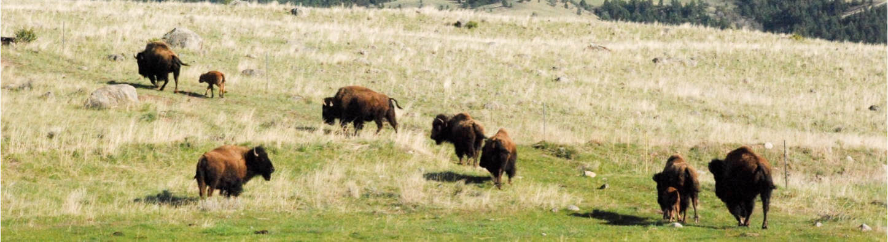

The Union of Concerned Scientists believes that traditional agriculture accounts for 70% of all drugs used annually in the U.S., resulting in greater numbers of deaths and sicknesses in humans, cattle, wildlife and birds, as well as triggering the rapid growth of antibiotic resistant bacteria. We convert agricultural practices to be organic, sustainable and wildlife-friendly. We do this by managing our farming and ranching practices in a manner that enhances wildlife habitat, as well as limiting (or, eliminating) the use of herbicides and pesticides. We have raised and/or pastured organic sheep, organic beef cows and organic bison.
Organic & Sustainable Agriculture

